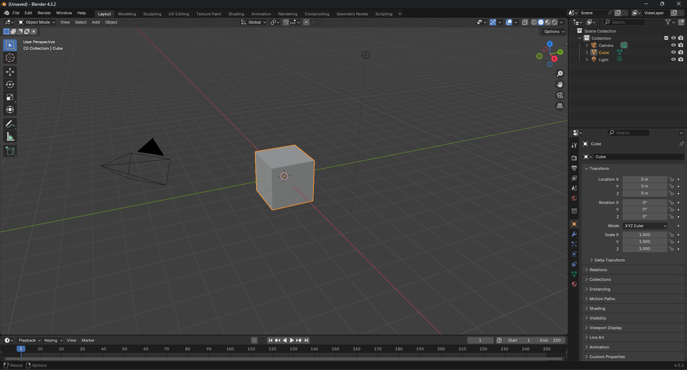

Урок 1: Вступ до Blender
Загальний огляд Blender
Blender — це безкоштовна і відкрита програма для створення 3D-графіки, яка підходить для моделювання, текстурування, анімації, симуляцій, візуалізації, відеомонтажу тощо. Її використовують як професіонали, так і початківці в дизайні, архітектурі, створенні ігор та фільмів. Інтерфейс виглядає наступним чином

Головні елементи інтерфейсу
- Viewport — головне місце, де ви працюєте з об’єктами.
- Outliner — показує всі об’єкти у сцені.
- Properties Editor — дозволяє налаштовувати параметри об’єктів.
- Timeline — використовується для анімації.
- Status Bar — відображає корисну інформацію та прогрес операцій.
Основні поняття:
- Сцена — контейнер, де розташовані усі об’єкти, камери, лампи, матеріали.
- Об’єкт — будь-який елемент, який може бути видимим на сцені (геометрія, світло, камера).
- Примітиви (меш-об'єкти) — базові об’єкти, які можна швидко створити: куб, сфера, циліндр, площина, тор.
Навігація у viewport
- Zoom — колесо миші або Ctrl + MMB.
- Orbit — MMB або Alt + LMB.
- Pan — Shift + MMB.
Навігація важлива для того, щоб отримати доступ до різних частин об’єкта, перевірити деталі, правильно побудувати модель та зрозуміти просторову організацію сцени.
Практична робота №1
Завдання: Створити сцену із об'єктами сонячної системи: Сонце, планети. Можете додати супутники. Розмістіть всі тіла сонячної системи на одній висоті, масштабуйте приблизно, але точними пропорціями можна знехтувати.